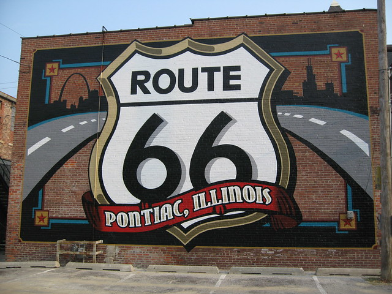

ighlights
ighlightsJoliet To Pontiac
We started out on the second leg of our Saturday trips going south on I355 to I55 South and taking the Joliet Road exit (heading south). We took that down to Il. 53, also heading south. From here we just followed the Route66 signs enjoying the sights.
H
ighlights
Ya gotta love the Blues Brothers on top of the roof of Joliet Kicks On 66.

A nd Dicks On Route66.
T he
Gemini Giant Muffler Man.
he
Gemini Giant Muffler Man.
T he
Polka Dot Drive In
he
Polka Dot Drive In
We had lunch at the Polka Dot and highly recommend it. The statues in front are totally Retro and cool! Inside is like going back in time(50’s, 60’s). They have working table top juke boxes just like the Diners of old.
P ontiac, Illinois Route66
The cruise down to Pontiac is filled with a bunch of wonderful sights taking you back in time. Pontiac, itself is full of wonder. The town has beautiful murals painted on some buildings, and the Route66 Museum is excellent. Also, the swinging bridges are worth a look.
